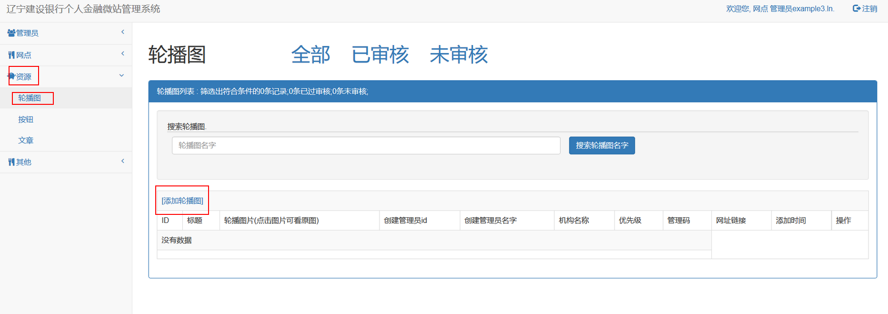
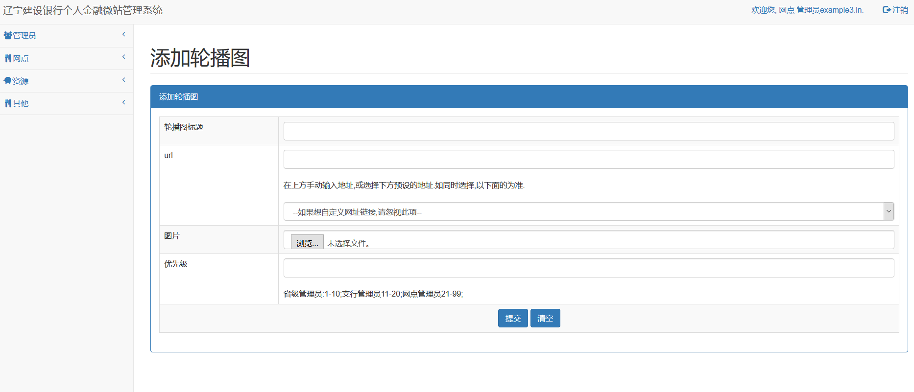

添加轮播图的方法
1.点击如下图所示的"添加轮播图"

2.跳转到如下页面

详细说明 : 添加一个轮播图需要管理员完成4项数据
1.轮播图标题：为轮播图定义的题目,根据不同的模板以不同的形式展示给银行的客户.
2.url：银行的客户点击轮播图后跳转的网址链接.
url栏目中分为2条
第一条可以自定义链接,写两种链接
一种是外部链接,比如说想让用户点击轮播图后访问百度首页,链接的内容要写成:http://www.baidu.com(注意:一定要有http://这类的前缀)
另一种是管理员通过本系统自己添加的图文消息,链接的获取方法后续会做出详细说明.
第二条预置了常用的链接
为了便于添加链接,我们收集了"建行辽宁分行电子银行","龙卡信用卡-辽宁","辽宁建行个人金融"三大公众号菜单中的链接.
注意:url的两栏只能填写一个,如果同时填写,则以预置的链接为准.
3.图片:轮播图展示的图片:可由管理员自行处理后上传.
4.优先级:
优先级的输入框中只能填写1-99之间的整数阿拉伯数字.
优先级可以定义资源的排序.
本系统依据管理员的级别将优先级分为3个等级
省级管理员:1-10;
支行管理员11-20;
网点管理员21-99;
对应级别的管理员只能输入对应的优先级
优先级的值越小,资源展示的越靠前.
以上信息全部规范输入后即可成功添加资源,如下图所示: